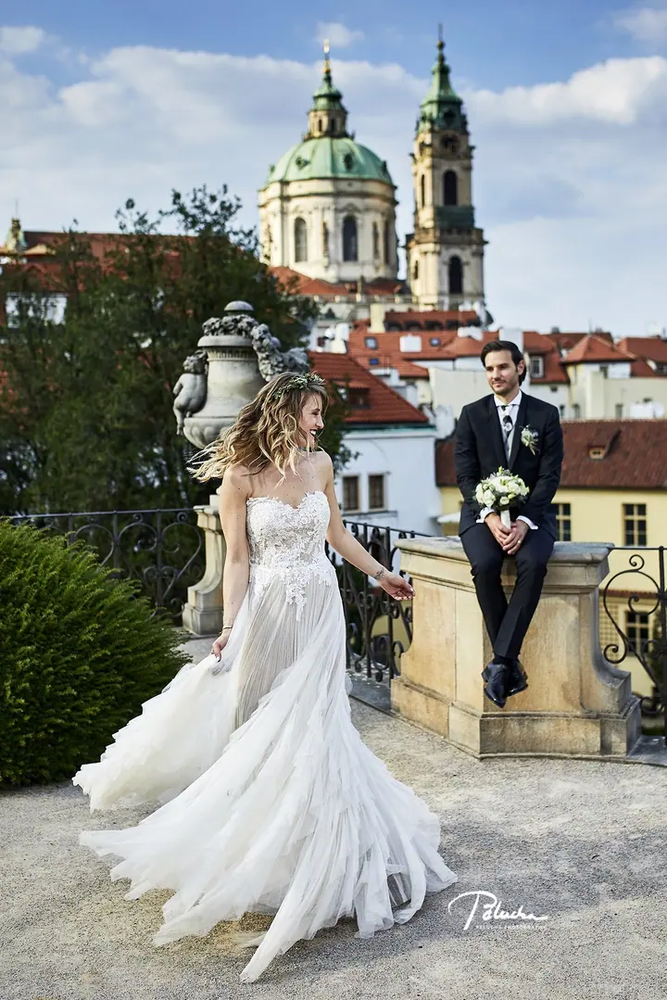
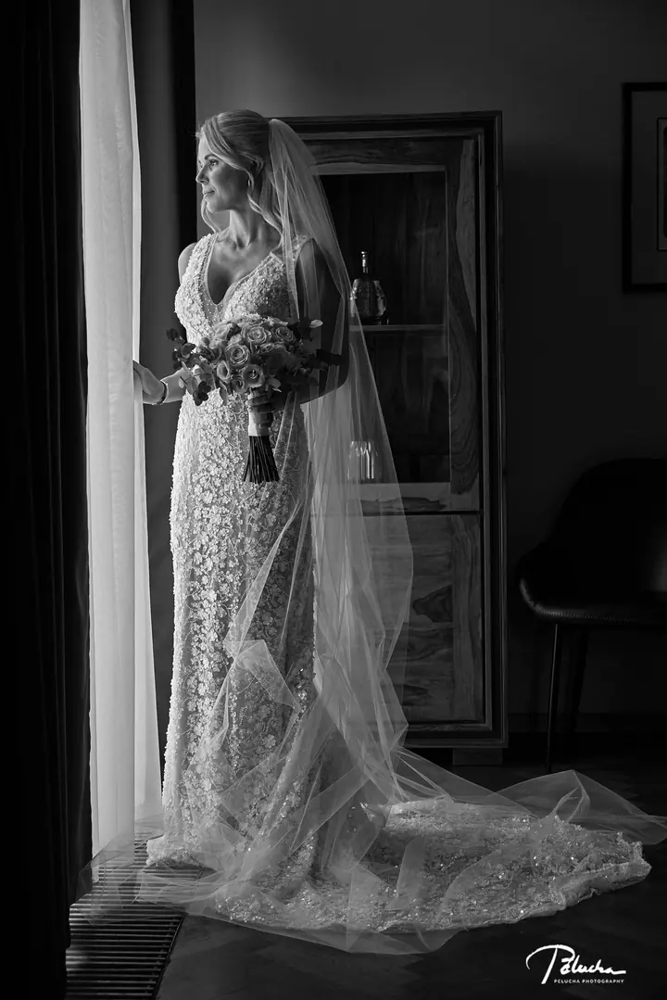
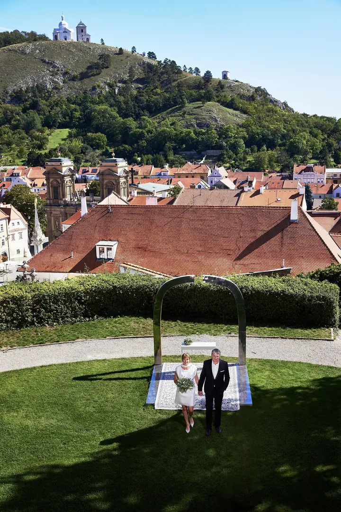
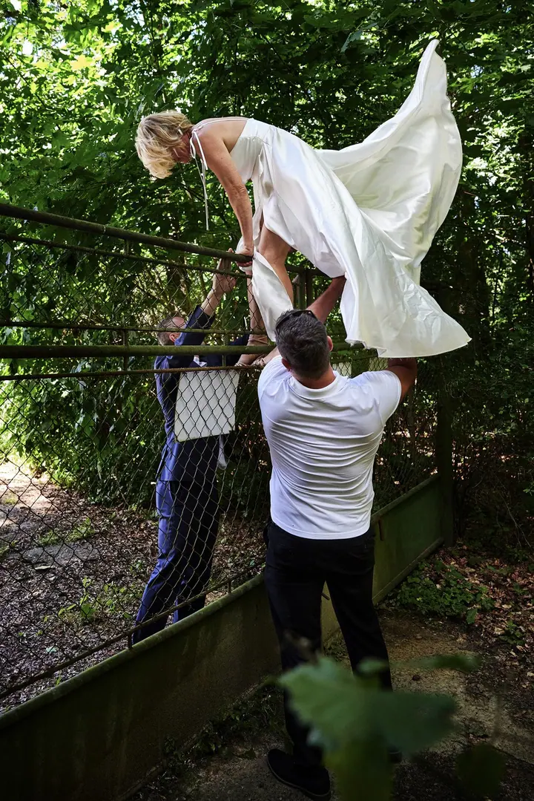
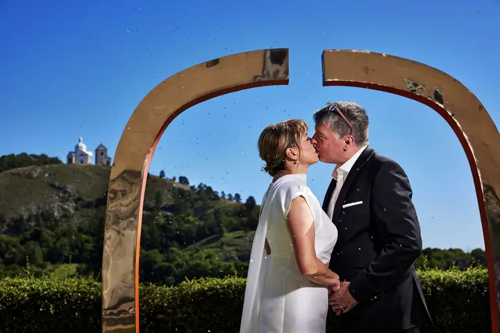

Svatební fotografie
Fotím svatby v dokumentárním stylu a hlídám hlavně autentické okamžiky. Jsem s vámi od zásnubního focení až po předání hotových svatebních alb, v Česku i v zahraničí.





Jmenuji se Petr Pělucha a od roku 2009 fotografuji svatby v Praze, po celém Česku i v zahraničí. Nejvíc mě baví autentické okamžiky a přirozené výrazy, které nikdo nenaaranžoval. Na konci dostanete svůj den v krásném svatebním albu.
Více o mně
„S citem i odborně tvořím svatební a portrétní snímky, na které budete hrdí.“
— Petr Pělucha
Fotím svatby v dokumentárním stylu a hlídám hlavně autentické okamžiky. Jsem s vámi od zásnubního focení až po předání hotových svatebních alb, v Česku i v zahraničí.
Fotím portréty zaměstnanců a vedení, týmové fotky a headshoty pro LinkedIn nebo firemní web. Přijedu za vámi do kanceláře, nebo se uvidíme ve studiu. Retušované fotky dodávám rychle.
Romantické a přirozené focení v Praze, ve studiu nebo na místě, které si vyberete. Umím nafotit i tajnou reportáž ze žádosti o ruku. Ceny začínají na 5 900 Kč.
Pořádám praktické svatební workshopy, kurz marketingu pro fotografy na volné noze a kurz práce s bleskem v exteriéru. Konzultace 1:1 osobně nebo online stojí 3 300 Kč za hodinu.
Jsem Mgr. Petr Pělucha, portrétní a svatební fotograf. S fotografováním jsem začínal jako samouk, prošel jsem si chybami i dobrými zkušenostmi a od roku 2009 se věnuji portrétu a mezinárodním svatbám v České republice i v zahraničí.
Svatby pro mě vždycky byly víc než jen práce. Rád zachycuji skutečné příběhy novomanželů na nejrůznějších místech a za jakéhokoliv počasí. Fotím dokumentárně, takže se nemusíte bát nekonečného pózování. Na celé spolupráci mi záleží: od pečlivé přípravy přes otevřenou komunikaci až po předání alba.
Kromě svateb fotím byznys portréty, týmové fotky a zásnubní focení, nejčastěji v Praze a ve Středočeském kraji. Pro fotografy pořádám workshopy a konzultace, kde jim předávám, co se mi osvědčilo v praxi.
Pošlete mi datum, místo a pár slov o tom, jakou svatbu chystáte. Pak vám připravím nabídku na míru.
Před svatbou spolu projdeme harmonogram, místa i vaše přání. Když budete chtít, můžeme začít zásnubním focením.
Celý den dokumentuji tak, jak ho skutečně prožíváte. Fotím přirozeně a nenápadně, ať prší, nebo svítí slunce.
Fotky pečlivě vyberu a upravím a pak je předám. Na závěr pro vás můžu připravit krásné svatební album.
Ano. Nejčastěji fotím v Praze a ve Středočeském kraji, ale svatby fotím po celé České republice i v zahraničí.
Každá svatba je jiná, a proto posílám nabídku na míru. Napište mi termín, místo a rozsah focení a já vám pošlu možnosti.
Ano, v Praze, ve studiu nebo na místě, které si vyberete. Základní balíček začíná na 5 900 Kč. Umím nafotit i tajnou reportáž ze žádosti o ruku a k focení si můžete objednat make-up a barbera.
Ano. Portréty zaměstnanců, týmové fotky i headshoty pro LinkedIn fotím přímo ve vaší kanceláři nebo ve studiu a retušované fotky dodávám rychle.